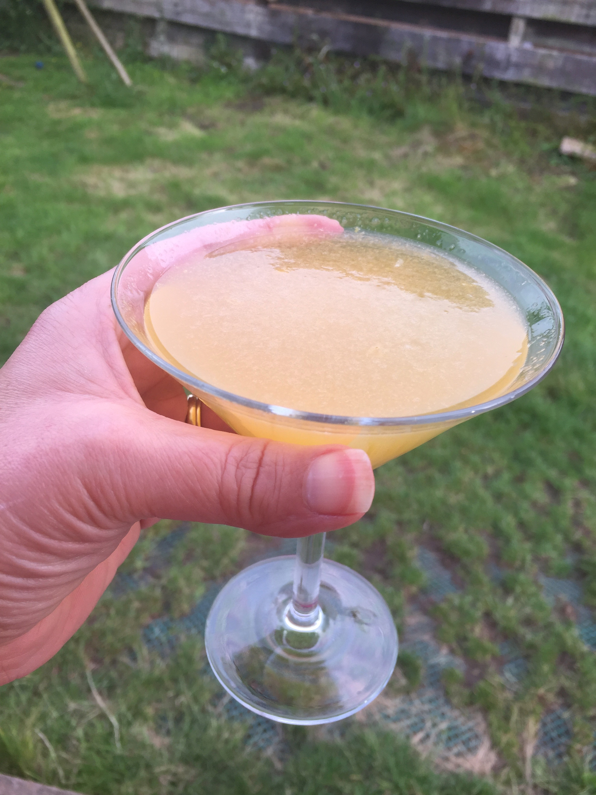
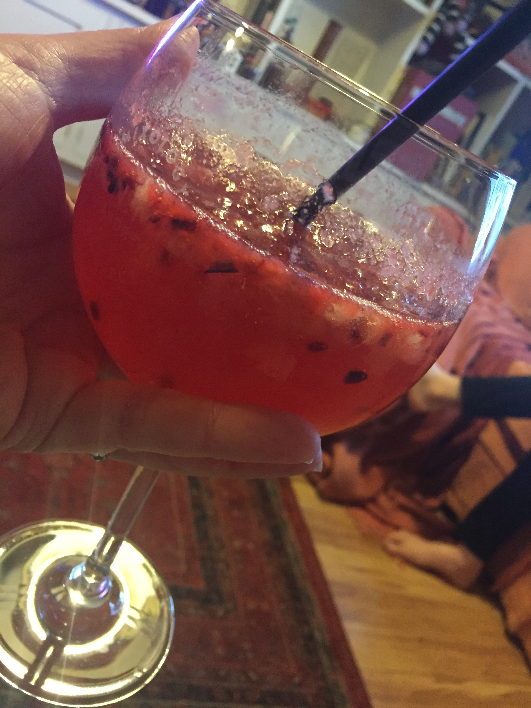

| Gin Name | Serve | Venue | Aromatics | Score | Image | Website | Extra Info | |||||
|---|---|---|---|---|---|---|---|---|---|---|---|---|
| J | C | S | H | Fr | Fl | |||||||
| Warner's Honey Bee Gin | Cocktail | At home | ✓ | ✓ | ✓ | 9 |  | Warner's | Very tasty gin, thoroughly enjoyed | |||
| Kongsgaard gin | Cocktail | At home | ✓ | ✓ | ✓ | ✓ | ✓ | 8 |  | Kongsgaard | Included in gin box and sampled in berry muddle cocktail. Would recommend | Total | 2 |